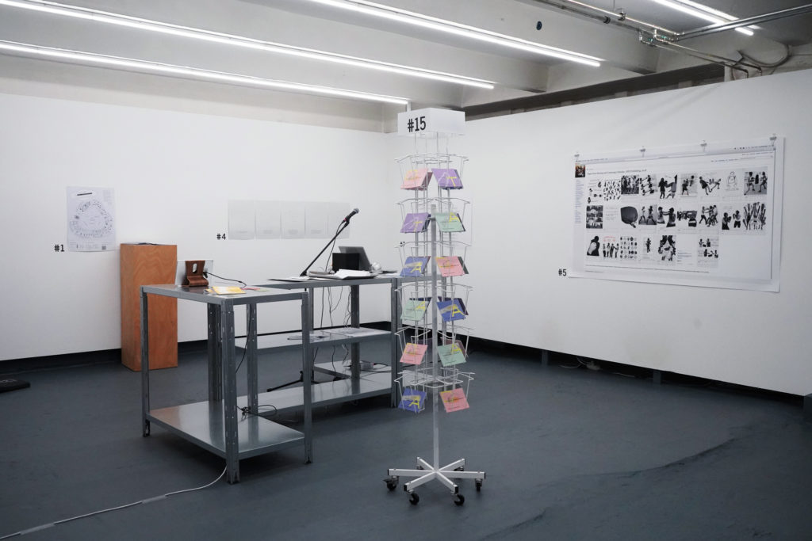

Last Pages
| Date: | 2019 |
| Format: | An Internet radio station with an open microphone |
| Index: | installation |
Context
For a couple years, AAAARG.ORG hosted an open-mic radio station on its front page called Very Public Radio, inspired by the little stories that I had read about Radio Alice. The way it worked was that if no one was broadcasting, everyone would see a broadcast button, and anyone could broadcast live from their computer. Once they stopped, the recording was archived. When no one was broadcasting, recordings from the archive were randomly selected for playback until they were interrupted by a live transmission.
This installation was a small extension of Very Public Radio that specifically asked the viewer to share the last page that they had read (most likely to themselves, silently) by reading it aloud for broadcast. The archive of recordings would be like a sonic commonplace book, a collection of page-long recordings, drawn from the things people in a city were reading at the time, from the place in the book they happened to be.
Score
An Internet radio station with an open microphone.
Next to the microphone, an instruction says:
Read aloud the last page that you read silently
When no one is broadcasting, the archive plays.
Installation images


Exhibition

This exhibition brings together 16 practices through which artists articulate their own forms of (digital) commons. From online archives, to digital tools/infrastructure and educational formats, the projects envision a (post-)digital culture in which notions of collaboration, free access to knowledge, sustainable use of shared resources and data privacy are central.
Exhibition
- Open Scores: How to Program the Commons. panke.gallery, Berlin, DE, 2019